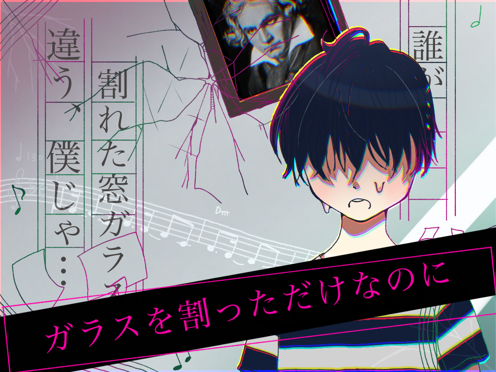

全ステージ クリア！
「おもいだい」
音楽室を見渡し、「おもいだい」に該当しそうな物を探した。
それに唯一該当しそうな台を近づくと、何やら引きずった後がある。
この台は、高い場所にある楽器を取るために使うのだが、児童は危ないため触ってはいけない決まりになっていた。
もとより、子供一人では動かすことすら難しいくらい重いため、どうしようもないのだが。
その台が引きずられて、ほんの少しだけ空いたスペースにまたノートの切れ端が置かれていた。
それを受け取るとすぐに校長室へと向かい、書いてあることを伝えた。

先生たちや友達のお母さんはすごく驚いていたけれど、友達はどこか安心したように笑っていた。
その後、私はすぐに帰るように言われたため、校長室を後にした。
後少しでも遅れていたら、間に合っていなかったかもと思うと、我ながらナイスタイミングであった。
誇らしげに学校を後にした後、ふと謎解きを始めたきっかけを思い出し振り返った。
「あ、鉛筆。結局返してもらってないや。」
Thank you for playing!
Special Thanks
リアル脱出ゲームとは
2004年に発表されたネットで爆発的に盛り上がった「脱出ゲーム」を、そのフォーマットそのままに現実世界に移し替えた大胆な遊びが「リアル脱出ゲーム」。マンションの1室や廃校、廃病院、そして東京ドームや六本木ヒルズなど、様々な場所で開催され、2007年に初開催して以降、現在までで累計820万人以上を動員。日本のみならず上海、台湾、シンガポールやサンフランシスコなど全世界で参加者を興奮の渦に巻き込み、男女問わずあらゆる世代を取り込む、今大注目の体験型エンターテインメント。
このゲームの企画者
企画・制作メンバー紹介
心斎橋キャンパス グループA：松尾風太
心斎橋キャンパス グループA：増本佳朝
心斎橋キャンパス グループA：甲斐百奈
心斎橋キャンパス グループA：石井大雅
心斎橋キャンパス グループA：美越崇矢